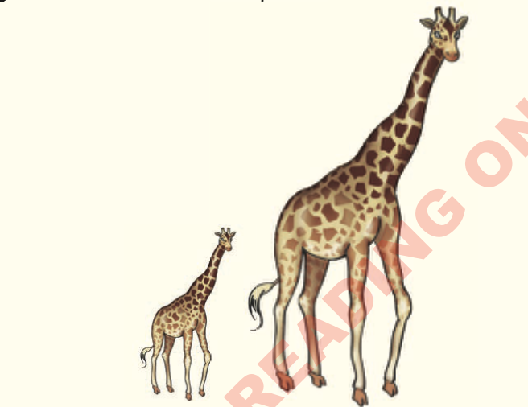

The calf is standing behind its mother. The calf has a very short tail and brown spots. Tanzania has many giraffes in its national parks.

Questions
(i)
Does the
giraffe have a long neck?
Yes, the giraffe [[blank:item-1]] a long neck.
(ii)
Does the
giraffe have a short neck?
No, the giraffe doesn’t [[blank:item-2]] a short neck.
(iii)
Does the
giraffe have short legs?
No, the giraffe doesn’t [[blank:item-3]] short legs.
(iv)
Does the
giraffe have green spots?
No, the giraffe doesn’t [[blank:item-4]] green spots.
(v)
Does the
giraffe have a calf?
Yes, the giraffe [[blank:item-5]] a calf.
(vi)
Does the calf have a
mother?
Yes, the calf [[blank:item-6]] a mother.
(vii)
Does the giraffe’s
calf have a short tail?
Yes, the giraffe’s calf [[blank:item-7]] a short tail.